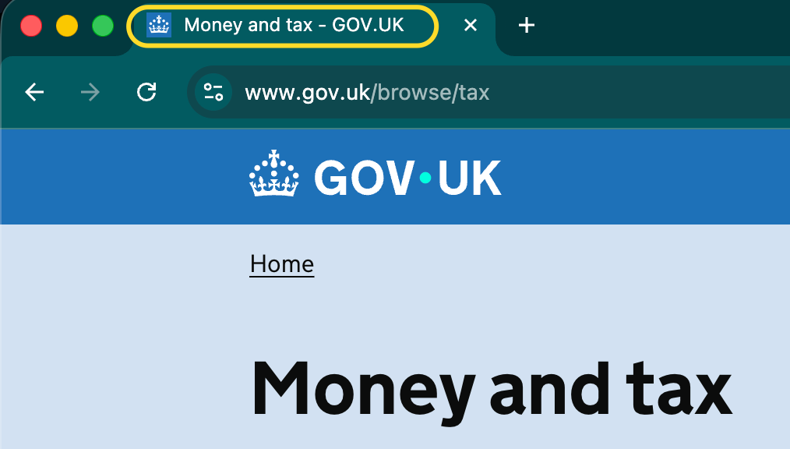

2.4.2 Page Titled (A)
Pages need to have descriptive titles.
What WCAG says:
Web pages have titles that describe topic or purpose.
Understanding 2.4.2 Page Titled
What this means
Web pages, including documents accessed through a browser, need to have a title which describes what the page is about.
On a web page, the title comes from the <title> element in the page’s code. It is usually visible within the browser tab.
In a document, the title is part of the file’s properties.
Why it matters
Having a descriptive title is particularly important to screen reader users, as the title is the first thing that’s read out when a user visits a page.
Descriptive titles benefit everyone, as they appear in various places in a browser, including:
- tabs
- search results
- bookmarks
- history
How to check
On the web, either hover over the current browser tab, or search for the <title> element in the page’s code.
Within documents, look for the title in the file’s properties - this is accessed from the File menu in tools such as Word and Acrobat.
Check that there is a descriptive title which makes it clear to a user what the page is about, when viewed out of context. In practice this also means that each page’s title needs to be unique.
In most cases, the title should also be similar to the main heading on the page, however they may differ slightly. For example, the title might also include the name of the website, or might exclude personal information that is in the main page heading.
How to test in detail for 2.4.2 Page Titled
Good example
Page title provides information and context

A page has a title of Money and tax - GOV.UK. From this title alone, it is clear what the page covers and which website it is on.
The title is helpful because it:
- correctly tells the user that the page is about money and tax
- “front loads” the most relevant part of the content - that it relates to money and tax is consistent with the main heading
- also includes the website name (GOV.UK) for context
Common mistakes
Title is missing or not descriptive
A page’s title might be empty, incomplete or incorrect, for example:
- A webpage with no title will simply show the web address in the browser tab, which is unlikely to be descriptive.
- A homepage might simply have a title of “Home” without mentioning the website it is the homepage of.
- A page to enter your billing address on example.com might have a title of “Delivery address - example.com”, which mentions the wrong address.
Title is not unique across related pages
On a set of related pages, when page titles are not unique it can make it hard for users to know where they are, or navigate between pages. Examples include:
- Search results across multiple pages. The title needs to include something that makes the page unique, for example “page 2 of 10” or “results starting with A”.
- Steps throughout a process or service. Titles need to identify the main purpose of the page (for example, “Enter your name”) as well as the service they are using.
Document has no title
When a document, such as a PDF file, has no title in its properties, the browser will usually read its filename instead. This is often not descriptive - for example “upload_001.pdf”.
While “friendly” filenames can help with understanding, a document’s properties must also contain a descriptive title to ensure that people can understand what a document is about regardless of the technology they’re using.
Related success criteria
- 2.4.4 Link Purpose (in Context) requires that links have text which makes sense in context.
- 2.4.5 Multiple Ways requires there to be at least two ways of finding a page. If one of those methods is search, then accurate page titles are important to help meet this.
- 2.4.6 Headings and Labels requires that headings within pages, and component labels are descriptive.